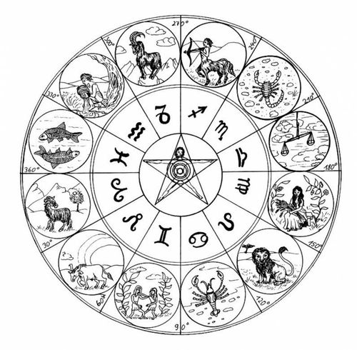

- ZODIAC
- 별자리
- 어원
황도 12궁이라는 뜻의 낱말
zodic
어원은 그리스어 ζῳδιακός κύκλος(조이다이코스 퀴클로스)로,
"작은 동물들로 이루어진 원"을 뜻하는 말이었다.
천칭자리는 동물이 아니기 때문에 이상할 수도 있지만, 고대 그리스인들은
천칭자리를 전갈자리의 집게 부위로 보아서 황도 11궁을 사용했다.
천칭자리를 별도의 별자리로 보고 황도 12궁에 포함시킨 것은 고대 로마
사람들이었다.

참고로 동양의 12지를 영어로
Chinese zodiac으로 번역한다.
이쪽은 황도 12궁과는 달리 동물로만 이루어져 있기 때문에,
그리스어 어원과 우연히도 더 잘 맞아떨어진다는 점이 흥미롭다.